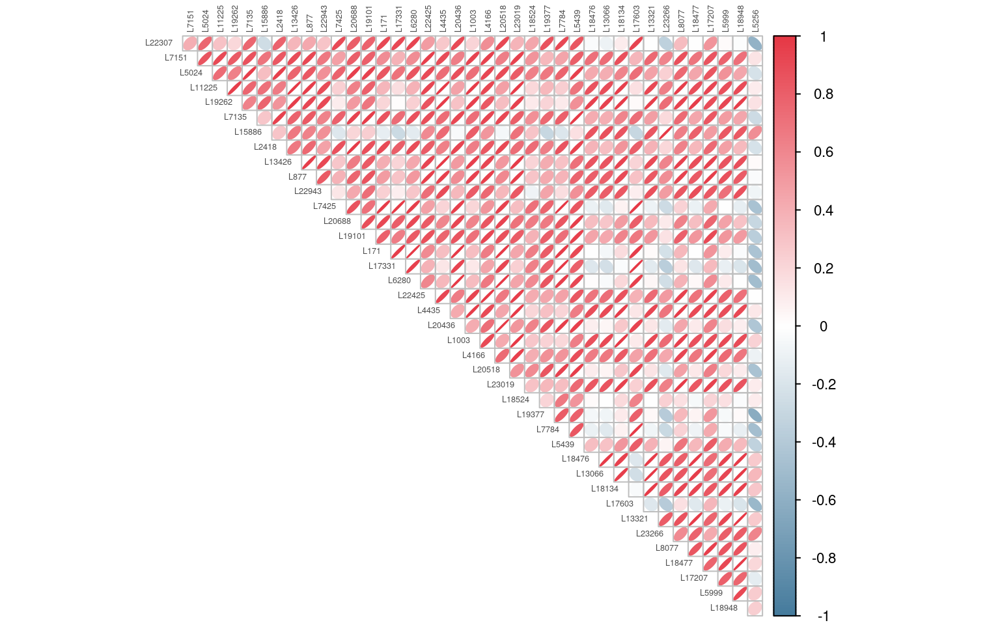

library(tidymodels)
library(tidyverse)
library(here)
library(janitor)
library(patchwork)
# Count matrix: genes as rows, samples as columns
# First column "Name" contains gene identifiers (e.g. CCAP1982_LOCUS00001)
rna_raw <- read_csv(here("files", "ccap_count_matrix.csv"))
# Sample metadata: one row per sample
meta <- read_csv(here("files", "ccap_metadata.csv"))22 Machine Learning — PCA and K-means
23 Workshop 4 — PCA and K-means
Introduction
In Workshops 1–3, every model was supervised: it learned from a labelled outcome and was evaluated on held-out data. This session removes that structure entirely. The dataset is a published RNA sequencing experiment on the Mediterranean fruit fly (Ceratitis capitata), measuring gene expression across seven distinct adult tissues in mated and virgin individuals. There is no single outcome variable to predict — the question is what structure the transcriptomic data itself contains.
The data were processed using Salmon, a quasi-mapping tool for RNA quantification, and normalised to Transcripts Per Million (TPM) at the gene level. TPM adjusts for differences in gene length and sequencing depth between samples, making expression levels comparable across genes within a sample. The raw values are still highly skewed — a small number of highly expressed genes dominate — so a log transformation is applied before any further analysis.
Principal Component Analysis reduces the 23,268-gene expression space to a small number of interpretable axes. K-means clustering then asks whether the samples fall into discrete natural groups without using the tissue labels. Together, these methods answer a question that cannot be addressed by inspection: is the transcriptomic variation in these data driven primarily by tissue type, by mating status, or by something else entirely?
This workshop analyses experiment 1 only: the 33 adult tissue samples, spanning all seven tissue types.
A note on evaluation in unsupervised learning
There is no held-out test set here and no AUC or RMSE to report. Variance explained and within-cluster sum of squares describe the solution mathematically, but they cannot tell you whether the structure is biologically meaningful. That judgement requires reasoning from the statistical output to the biology — which is what the reflection callouts in this session ask you to do.
A note on how we use AI in this workshop
AI tools are appropriate for debugging code and checking documentation. The reflection callouts require you to reason from numerical outputs to biological conclusions. This cannot be delegated to a language model — it requires domain knowledge about tissue biology and the medfly experimental design.
Learning Objectives
By the end of this workshop, you will:
- Filter a metadata table to a subset of samples and use it to subset a count matrix
- Apply a log transformation to TPM values and explain its purpose
- Filter to the most highly expressed genes and reshape to sample × gene format
- Build a PCA pipeline with
step_normalize()andstep_pca()in a tidymodels recipe - Produce and interpret a scree plot, a loadings lollipop, and a scores biplot
- Apply k-means clustering to PC scores and choose \(k\) using an elbow plot
- Interpret cluster structure in relation to the known tissue groupings
Part 1 — Data Preparation
Open scripts/01_prepare.R. All Part 1 code goes here.
23.0.1 1.1 Load the data
WarningFile names
The count matrix file should be saved as count_matrix.csv and the metadata file as ccap_metadata.csv, both inside your files/ directory. These correspond to the files distributed with the workshop: the Salmon-quantified, TPM-normalised gene-level count matrix for Ceratitis capitata and the accompanying sample metadata.
Inspect both objects before proceeding.
The metadata contains the columns: id (sample name), experiment (1 or 2), rep (biological replicate), tissue, sex, age, and mating_status.
Tissue codes for experiment 1:
| Code | Tissue | Sex |
|---|---|---|
| YO | Young ovary | Female |
| OO | Old ovary | Female |
| AB | Abdomen | Both |
| TE | Testis | Male |
| AG | Accessory gland | Male |
| EG | Egg | — |
23.0.2 1.2 Filter to experiment 1
This workshop focuses on the adult tissue samples (experiment 1). Filter the metadata to those samples, then use the resulting sample IDs to subset the count matrix.
23.0.2.1 Checkpoint 1.2
After filtering, meta1 has 33 rows (one per experiment-1 sample).
rna1 has 33 numeric columns (plus the Name column).
23.0.3 1.3 Log transformation
TPM values are already normalised for sequencing depth and gene length, but the distribution remains highly skewed — a small number of genes dominate with TPM values in the thousands while most genes fall below 10. This skew would cause a PCA to be dominated by the most extreme values rather than by biologically consistent patterns across samples.
Applying \(\log(\text{TPM} + 1)\) compresses the upper tail, stabilises variance across the expression range, and makes the values more appropriate for a variance-based method.
log(0) returns -Inf in R. Even after TPM normalisation, many genes will have zero values in some samples — genes not expressed in a given tissue. log1p(x) computes log(x + 1), mapping zero to log1p(0) = 0 and avoiding undefined values. This is the standard transformation for count-like data before PCA.
NoteReflection 1
- TPM normalisation adjusts for gene length and sequencing depth. If two samples have the same TPM value for a gene, does that mean exactly the same number of mRNA molecules were present in the original tissue? What does TPM actually represent?
- Why is variance stabilisation important before PCA? Sketch what would happen in a two-gene PCA if one gene had log-TPM values ranging from 0 to 9 and another from 0 to 0.1.
23.0.4 1.4 Filter to highly expressed genes
With 23,268 genes, the majority contribute noise rather than biological signal to a PCA. Genes expressed at very low levels across all samples are dominated by sampling variation. Retaining only the most highly expressed genes preserves signal while keeping the computation tractable.
The pipeline below computes mean log-expression across all 33 samples for each gene, then retains the top 200.
across(where(is.numeric)) selects all numeric columns — in rna1_log, those are the 33 sample columns. rowMeans() computes the mean across those columns for each row (gene). The Name column is character and is automatically excluded by where(is.numeric). After computing mean_expr, slice_max() retains the 200 rows with the largest mean expression values, and select(-mean_expr) removes the helper column.
23.0.4.1 Checkpoint 1.4
After filtering, rna1_filtered has exactly 200 rows.
The Name column is still present in rna1_filtered.
23.0.5 1.5 Reshape to sample × gene format
The count matrix has genes as rows and samples as columns. The tidymodels recipe requires samples as rows and genes as columns — the transpose orientation. A pivot-through-long-format achieves this cleanly without base R matrix operations.
Check the result: rna1_wide should have 33 rows (one per sample) and 201 columns (200 gene columns plus id).
23.0.5.1 Checkpoint: Before moving to Part 2
rna1_wide has samples as rows and gene names as columns.
The id column in rna1_wide matches the id column in meta1.
The number of gene columns in rna1_wide is 200.
23.0.6 Exploring the correlation structure
Before reducing the dimensionality of the data it is worth examining whether the genes in our filtered set are correlated with one another. If many genes rise and fall together across samples, that shared variation is exactly the signal PCA is designed to extract. If genes were all independent, PCA would offer little compression.
library(corrplot)
# Build the correlation matrix from the wide-format data
# Select the gene columns only (exclude id)
cor_mat <- rna1_wide |>
select(-id) |>
select(1:40) |>
cor()
# Shorten gene names for legibility
colnames(cor_mat) <- str_remove(colnames(cor_mat), "CCAP1982_") |>
str_replace("LOCUS", "L")
rownames(cor_mat) <- colnames(cor_mat)
corrplot(cor_mat,
method = "ellipse",
type = "upper",
col = colorRampPalette(c("#457B9D","white", "#E63946" ))(200),
tl.col = "grey30",
tl.cex = 0.4,
cl.cex = 0.7,
diag = FALSE)
A narrow ellipse aligned along the diagonal indicates a strong correlation — positive if it leans to the upper right, negative if it leans to the upper left. A circle indicates no correlation. In a transcriptomics dataset, you would expect to see blocks of strongly correlated genes corresponding to co-expressed gene sets — genes involved in the same biological process tend to be switched on and off together. These blocks are exactly what PCA will summarise as a single axis of variation.
Part 2 — PCA and K-means
Open scripts/02_pca_kmeans.R. All remaining code goes here. Write all code yourself from this point forward.
23.0.7 2.1 Fitting the PCA
The recipe formula ~. indicates there is no outcome variable — every column is a predictor. The id column must be excluded before the recipe; it is a character identifier and step_normalize() will error if passed a non-numeric column.
step_normalize() standardises each gene to zero mean and unit variance across the 33 samples. This is necessary even after log transformation, because genes still differ in their variance across samples. step_pca() then performs the eigendecomposition. Setting num_comp = 10 is sufficient to capture the interpretable structure; the maximum possible number of PCs is 32 (one fewer than the number of samples), but only the first few will be worth examining.
pca_rec <- recipe(~., data = rna1_wide |> select(-id)) |>
step_normalize(all_numeric_predictors()) |>
step_pca(all_numeric_predictors(), num_comp = 10)
pca_prep <- prep(pca_rec)
# Extract PC scores and join metadata
pca_scores <- juice(pca_prep) |>
bind_cols(rna1_wide |> select(id)) |>
left_join(meta1, by = "id")It is useful to create a readable tissue label column for plotting.
pca_scores <- pca_scores |>
mutate(
tissue_label = case_when(
tissue == "YO" ~ "Young ovary",
tissue == "OO" ~ "Old ovary",
tissue == "AB" & sex == "F" ~ "Abdomen (F)",
tissue == "AB" & sex == "M" ~ "Abdomen (M)",
tissue == "TE" ~ "Testis",
tissue == "AG" ~ "Accessory gland",
tissue == "EG" ~ "Egg",
TRUE ~ tissue
)
)23.0.8 2.2 Scree plot
pca_var <- tidy(pca_prep, 2, type = "variance") |>
filter(terms == "percent variance", component <= 10)
pca_var |>
mutate(component = factor(component)) |>
ggplot(aes(x = component, y = value)) +
geom_col(fill = "#457B9D", alpha = 0.85, width = 0.65) +
geom_text(aes(label = paste0(round(value, 1), "%")),
vjust = -0.4, fontface = "bold", size = 3.5) +
labs(x = "Principal component",
y = "Variance explained (%)",
title = "Scree plot: Ceratitis capitata RNAseq, experiment 1") +
scale_y_continuous(expand = expansion(mult = c(0, 0.12))) +
theme_minimal(base_size = 13) +
theme(panel.grid.major.x = element_blank())23.0.8.1 Assessment 1
How much variance (%, to one decimal place) does PC1 explain?
How much variance (%, to one decimal place) do PC1 and PC2 explain combined?
In transcriptomic data from samples with distinct tissue identities, PC1 typically captures a very large proportion of the variance — often 40–80%. This reflects the fact that tissue type is the dominant source of transcriptomic variation: a testis and an ovary differ in thousands of genes simultaneously. A large drop between PC1 and PC2 (a steep elbow) confirms that one dominant axis explains most of the structure. If all ten bars were roughly equal, it would suggest the data lacks strong low-dimensional structure.
23.0.9 2.3 Gene loadings on PC1
Loadings on PC1 identify the genes whose expression most strongly separates samples along the primary axis of variation. With 200 genes, showing all loadings produces an unreadable plot — filter to the top 20 by absolute loading value.
tidy(pca_prep, 2) |>
filter(component == "PC1") |>
slice_max(order_by = abs(value), n = 20) |>
mutate(
terms = str_remove(terms, "CCAP1982_") |> fct_reorder(value),
direction = if_else(value >= 0, "positive", "negative")
) |>
ggplot(aes(x = value, y = terms, colour = direction)) +
geom_vline(xintercept = 0, colour = "grey60") +
geom_segment(aes(x = 0, xend = value, y = terms, yend = terms),
linewidth = 1.2) +
geom_point(size = 3.5) +
scale_colour_manual(
values = c("positive" = "#457B9D", "negative" = "#E63946"),
guide = "none"
) +
labs(x = "Loading on PC1", y = NULL,
title = "Top 20 gene loadings on PC1",
subtitle = "Gene names shortened — full IDs in the form CCAP1982_LOCUSxxxxx") +
theme_minimal(base_size = 12)
NoteReflection 2
- A positive loading on PC1 means a gene’s expression increases as a sample moves toward positive PC1 values. Looking at the biplot you will produce shortly, which tissue types sit at the positive end of PC1?
- The loadings represent the genes that most strongly drive the separation you see in the biplot. What follow-up analysis would you perform to determine whether these genes have known tissue-specific functions in insects?
- There is no statistical significance test for PCA loadings — a gene with a large absolute loading is not “significantly” driving PC1 in any formal sense. What does this mean for how you report or act on a loadings result?
23.0.10 2.4 Scores biplot
The scores are the coordinates of each sample in PC space. Colouring points by tissue type — a variable not used to compute the PCA — tests whether the analysis has recovered the biological structure of the experiment.
pc1_pct <- round(pca_var$value[1], 1)
pc2_pct <- round(pca_var$value[2], 1)
pal_tissue <- c(
"Young ovary" = "#E63946",
"Old ovary" = "#F4A261",
"Abdomen (F)" = "#E9C46A",
"Abdomen (M)" = "#2a9d8f",
"Testis" = "#457B9D",
"Accessory gland" = "#1D3557",
"Egg" = "#8338EC"
)
pca_scores |>
ggplot(aes(x = PC01, y = PC02, colour = tissue_label)) +
geom_point(size = 3, alpha = 0.9) +
scale_colour_manual(values = pal_tissue, name = "Tissue") +
labs(x = paste0("PC1 (", pc1_pct, "% variance)"),
y = paste0("PC2 (", pc2_pct, "% variance)"),
title = "PCA biplot — Ceratitis capitata experiment 1",
subtitle = "Tissue labels were not used to compute the PCA") +
theme_minimal(base_size = 13) +
theme(legend.position = "right")Now produce a second version coloured by mating status to see whether that variable also structures the data.
pca_scores |>
filter(!is.na(mating_status)) |>
ggplot(aes(x = PC01, y = PC02,
colour = tissue_label,
shape = mating_status)) +
geom_point(size = 3, alpha = 0.9) +
scale_colour_manual(values = pal_tissue, name = "Tissue") +
scale_shape_manual(values = c("M" = 16, "V" = 1),
labels = c("M" = "Mated", "V" = "Virgin"),
name = "Mating status") +
labs(x = paste0("PC1 (", pc1_pct, "% variance)"),
y = paste0("PC2 (", pc2_pct, "% variance)"),
title = "PCA biplot — tissue type and mating status") +
theme_minimal(base_size = 13)23.0.10.1 Assessment 2
Which biological variable most strongly separates samples along PC1?
NoteReflection 3
- Do all seven tissue types form clearly separated clusters in the biplot? If any tissues overlap, which ones, and what biological explanation might account for this?
- Mating status is encoded as point shape in the second biplot. Does mating status appear to separate samples within any of the tissue groups? Which tissues would you most expect to show mating-status-dependent expression differences, and why?
- PC1 explains the majority of the variance. What does the position of a sample along PC2 represent in relation to PC1?
23.0.11 2.5 K-means clustering on PCA scores
K-means partitions the samples in PC space into \(k\) discrete clusters by minimising total within-cluster sum of squares. Running on the first three PC scores excludes the noise captured in lower-order components.
23.0.11.1 2.5.1 Choosing k: elbow plot
set.seed(99)
elbow_df <- tibble(k = 1:8) |>
mutate(
km = map(k, ~kmeans(pca_scores |> select(PC01, PC02, PC03),
centers = .x, nstart = 25)),
wss = map_dbl(km, ~.x$tot.withinss)
)
elbow_df |>
ggplot(aes(x = k, y = wss)) +
geom_line(colour = "#457B9D", linewidth = 1.2) +
geom_point(colour = "#457B9D", size = 3.5) +
scale_x_continuous(breaks = 1:8) +
labs(x = "Number of clusters (k)",
y = "Total within-cluster sum of squares",
title = "Elbow plot: k-means on experiment 1 PC scores (PC1–PC3)") +
theme_minimal(base_size = 13)23.0.11.2 Assessment 3
Based on the elbow plot, which value of k shows the most pronounced change in the rate of decrease?
23.0.11.3 2.5.2 Fitting the final k-means model
23.0.11.4 2.5.3 Comparing clusters to tissue labels
Produce two side-by-side plots: the first coloured by k-means cluster, the second by tissue type.
pal_cluster <- c("1" = "#457B9D", "2" = "#E63946", "3" = "#2a9d8f",
"4" = "#E9C46A", "5" = "#8338EC")
p_cluster <- pca_scores |>
ggplot(aes(x = PC01, y = PC02, colour = cluster)) +
geom_point(size = 3, alpha = 0.9) +
scale_colour_manual(values = pal_cluster, name = "Cluster") +
labs(x = paste0("PC1 (", pc1_pct, "% var)"),
y = paste0("PC2 (", pc2_pct, "% var)"),
title = "K-means (k = 5)") +
theme_minimal(base_size = 12)
p_tissue <- pca_scores |>
ggplot(aes(x = PC01, y = PC02, colour = tissue_label)) +
geom_point(size = 3, alpha = 0.9) +
scale_colour_manual(values = pal_tissue, name = "Tissue") +
labs(x = paste0("PC1 (", pc1_pct, "% var)"),
y = paste0("PC2 (", pc2_pct, "% var)"),
title = "Known tissue groups") +
theme_minimal(base_size = 12)
p_cluster + p_tissueNow cross-tabulate cluster assignments against tissue labels to see how well they correspond.
23.0.11.5 Assessment 4
How many samples are assigned to the largest k-means cluster?
ImportantReflection 4
- How well does the k-means solution with \(k = 5\) recover the seven known tissue types? Which tissues are merged into the same cluster, and is there a biological reason why those tissues might have similar expression profiles?
- The k-means algorithm does not know that testis and accessory gland are both male reproductive tissues, or that young and old ovaries are both ovarian. Yet it may or may not merge them. What does the cross-tabulation tell you about the resolution of transcriptomic differences between these tissue groups at \(k = 5\)?
- A researcher proposes using k-means clustering to automatically classify tissue samples of unknown origin. Based on what you have seen in this workshop, what are the three most important caveats you would give them?
Summary
Key concepts
TPM (Transcripts Per Million) — a normalisation of RNAseq counts for gene length and sequencing depth; allows comparison of gene expression levels across genes within a sample, but values remain skewed and require log transformation before PCA.
Log transformation — log1p(x) applied to TPM values compresses the dynamic range and stabilises variance; zero-count genes map to zero, avoiding undefined values.
Gene filtering — retaining the top \(n\) genes by mean expression removes low-abundance noise and makes PCA computationally tractable.
Principal Component Analysis (PCA) — an unsupervised method that rotates the gene expression space to maximise variance along successive orthogonal axes; produces variance explained, loadings, and scores.
Scree plot — bar chart of percentage variance explained per PC; a steep elbow indicates strong low-dimensional structure.
Loadings — linear combination weights defining each PC; large absolute values identify genes driving that axis of variation.
Scores — coordinates of each sample in PC space; plotted as a biplot and coloured by metadata to reveal whether the PCA has captured the experimental structure.
K-means clustering — partitions samples into \(k\) groups by minimising within-cluster sum of squares; run on PC scores to reduce noise.
Elbow method — heuristic for choosing \(k\): the point beyond which additional clusters yield diminishing variance reduction.
Skills checklist
By the end of this workshop you should be able to:
Additional Resources
Conceptual reading:
- Saccenti, E. (2024). A gentle introduction to principal component analysis using tea-pots, dinosaurs, and pizza. Teaching Statistics. — Geometric intuition for PCA; relevant to the accompanying lecture.
Tidymodels:
-
step_pca()documentation: https://recipes.tidymodels.org/reference/step_pca.html - Tidymodels PCA tutorial: https://www.tidymodels.org/learn/statistics/pca/
RNAseq methods:
- Love, M. I., Huber, W., & Anders, S. (2014). Moderated estimation of fold change and dispersion for RNA-seq data with DESeq2. Genome Biology, 15, 550. — Standard reference for count data; contextualises why log-TPM exploration is appropriate but insufficient for differential expression testing.
- Patro, R. et al. (2017). Salmon provides fast and bias-aware quantification of transcript expression. Nature Methods, 14, 417–419. — The quantification tool used to produce this dataset.